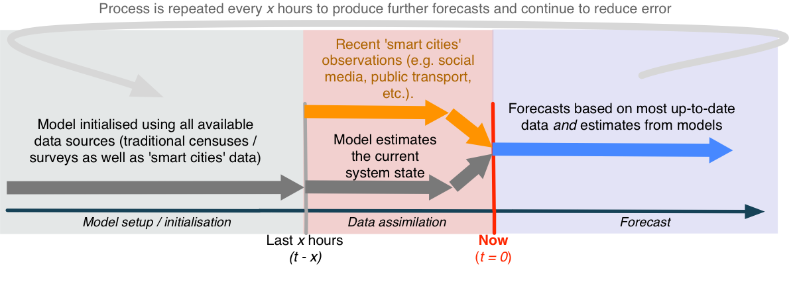
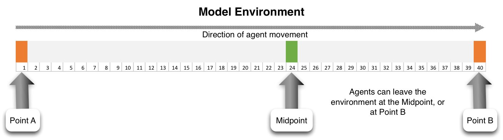
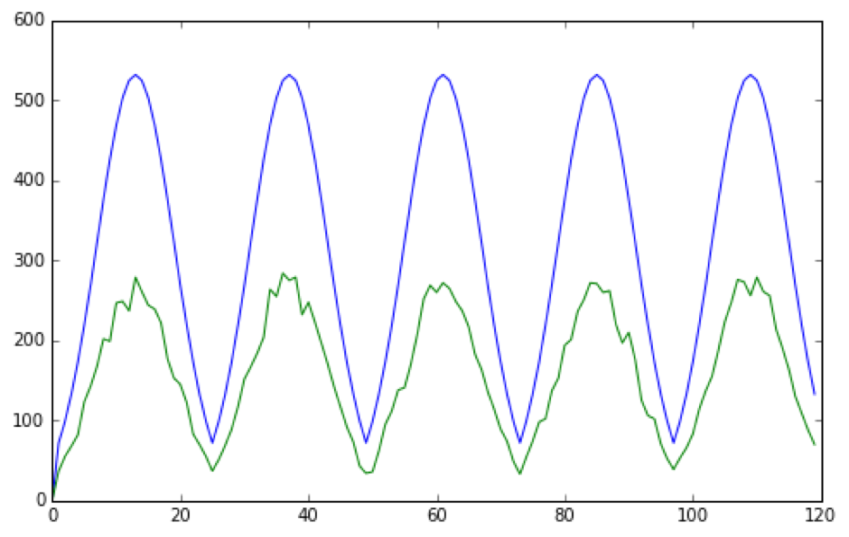

Forecasting Short-Term Urban Dynamics: Data Assimilation for Agent-Based Modelling
Nick Malleson, Alice Tapper, Jon Ward, Andrew Evans
Schools of Geography & Mathematics, University of Leeds, UK
nickmalleson.co.uk
surf.leeds.ac.uk
These slides: http://surf.leeds.ac.uk/presentations.html
Code: https://github.com/nickmalleson/surf
Full paper: http://surf.leeds.ac.uk/p/2017-09-26-essa-da.pdf
Abstract
Background. The `data deluge', coupled with related `smart cities' initiatives, have led to a proliferation of models that capture the current state of urban systems to a high degree of accuracy. However, their ability to forecast future system states appears limited. Agent-based modelling (ABM) is well suited to modelling urban systems, but at present the methodology is seriously limited in its ability to incorporate up-to-date data (such as social media contributions, mobile telephone activity, public transport use, etc.) as they arise in order to reduce uncertainty in model forecasts.
Methods. This paper presents ongoing work that adapts data assimilation techniques from fields such as meteorology in order to allow agent-based models to be optimised using streaming data in real time. Here, a simple example of an agent-based model used to simulate the movement of people as they travel along a street is illustrated. Importantly, the model is optimised dynamically with an ensemble Kalman filter in response to hypothetical pedestrian count data.
Findings. The data assimilation technique reliably estimates the model parameter that it is attempting to optimise. Surprisingly, however, the estimates of the `true' system state that are produced by the model combined with noisy observations are less accurate than the observations in isolation. This is likely an artefact of the specific system under study here. Ultimately, we work towards a combination of ABM and data assimilation methods that will be able to assimilate streaming `smart cities' data into models in real time.
Overview
Background - smart cities, the data deluge, and forecasting
ABM for geographical data science and policy making
Major hurdle: real time calibration
Dynamic data assimilation for ABM
with an ensemble Kalman filter (EnKF)
Towards a real-time city simulation
Smart cities and the data deluge

Abundance of data about individuals and their environment
"Big data revolution" (Mayer-Schonberger and Cukier, 2013)
"Data deluge" (Kitchin, 2013a)
Smart cities
cities that "are increasingly composed of and monitored by pervasive and ubiquitous computing" (Kitchin, 2013a)
Large and growing literature
What about forecasting?
Abundance of real-time analysis, but limited forecasting. E.g.:
MassDOT Real Time Traffic Management system (Bond and Kanaan, 2015)
Detect vehicles with Bluetooth to analyse current traffic flows
Centro De Operacoes Prefeitura Do Rio (in Rio de Janeiro)
Advertise some predictive ability, but sparse detail
City dashboards
Forecasting ability is surprisingly absent in the literature
(correct me if I'm wrong!)
Why so little evidence of forecasting?
Proprietary systems? Company secrets?
A methodological gap?
Machine learning will probably help, but black box is a drawback
Maybe agent-based modelling could have the answer
Agent-Based Modelling (ABM)

Autonomous, interacting 'agents'
Model phenomena from the 'bottom-up'
Advantages:
Modelling complexity, non-linearity, emergence
Natural description of a system
Bridge between verbal theories and mathematical models
History of the evolution of the system
ABM Example - Burglary
ABM Problems
1. Computationally Expensive
Not amenable to machine-led calibration
2. Data hungry
Need fine-grained information about individual actions and behaviours
3. Divergent
Usually models represent complex systems
Projections / forecasts quickly diverge from reality
3. Divergence
Complex systems
One-shot calibration
Nonlinear models predict near future well, but diverge over time.

3. Divergence
Drawback with the 'typical' model development process
Waterfall-style approach is common
Calibrate until fitness is reasonable, then make predictions
But we can do better:
Better computers
More (streaming) data
Methodological gap

Dynamic Data Assimilation
Used in meteorology and hydrology to constrain models closer to reality.
Try to improve estimates of the true system state by combining:
Noisy, real-world observations
Model estimates of the system state
Should be more accurate than data / observations in isolation.
Dynamic Data Assimilation
How?
Particle filters
Indoor footfall (Rai and Hu, 2013.; Wang and Hu, 2015)
Kalman Filter
Air traffic (Chen et al., 2012)
Ensemble Kalman Filter
Pedestrian footfall (Ward et al., 2016)
Sequential Monte Carlo (SMC)
Wildfire (Hu, 2011; Mandel et al., 2012)
Ensemble Kalman Filter - Basic Process
1. Forecast.
Run an ensemble of models (ABMs) forward in time.
Calculate ensemble mean and variance
2. Analysis.
New 'real' data are available
Integrate these data with the model forecasts to create estimate of model parameter(s)
Impact of new observations depends on their accuracy
3. Repeat
Ensemble Kalman Filter - Basic Process
Experiment with an EnFK
Very simple ABM
People walking along a street
Every hour, x people begin at point A
CCTV Cameras at either end count footfall
Some people can leave before they reach the end (bleedout rate)
Aim: Estimate the number of people who will pass camera B
Hypothetical 'Truth' Data
Use the model to first generate a hypothetical reality
(Preliminary) Experimental Results

(Preliminary) Experimental Results
Forecast and analysis are barely distinguishable
Virtual observations are closer to 'truth' than the analysis :-(
This is probably due to the degree of randomness in the model
EnKF estimates the model parameter (bleedout rate) accurately :-)
Conclusion and Outlook
Surprising lack of smart cities forecasting
ABM potentially able to combine 'big' data to make more reliable short-term predictions
Lots of work needed to adapt data assimilation techniques
Future: a holistic city model, estimating the current state and predicting future states.
References
Bond, R., and Kanaan, A. (2015) MassDOT Real Time Traffic Management System. In Planning Support Systems and Smart Cities, S. Geertman, J. Ferreira, R. Goodspeed, and J. Stillwell, Eds. Springer International Publishing, pp. 471–488.
Kitchin, R. (2013a). Big data and human geography Opportunities, challenges and risks. Dialogues in Human Geography, 3(3):262–267.
Kitchin, R. (2013b). The Real-Time City? Big Data and Smart Urbanism. SSRN Electronic Journal.
Mayer-Schonberger, V. and Cukier, K. (2013). Big Data: A Revolution That Will Transform How We Live, Work and Think. John Murray, London, UK
Ward, Jonathan A., Andrew J. Evans, and Nicolas S. Malleson. 2016. Dynamic Calibration of Agent-Based Models Using Data Assimilation. Open Science 3 (4). doi:10.1098/rsos.150703.
Simulation as the Catalyst for Geographical Data Science and Urban Policy Making
Nick Malleson & Alison Heppenstall
Thanks: Alice Tapper, Jon Ward, Andy Evans
nickmalleson.co.uk
surf.leeds.ac.uk
These slides: http://surf.leeds.ac.uk/presentations.html
Ongoing work:
Ward, Jonathan A., Andrew J. Evans, and Nicolas S. Malleson (2016) Dynamic Calibration of Agent-Based Models Using Data Assimilation. Open Science 3 (4). doi:10.1098/rsos.150703.